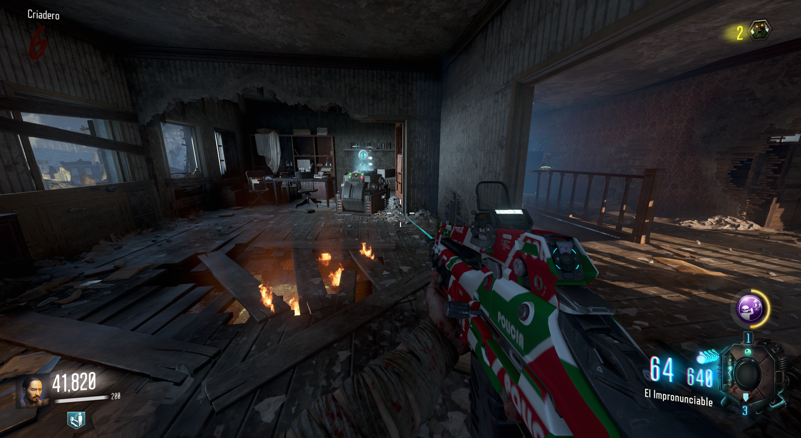
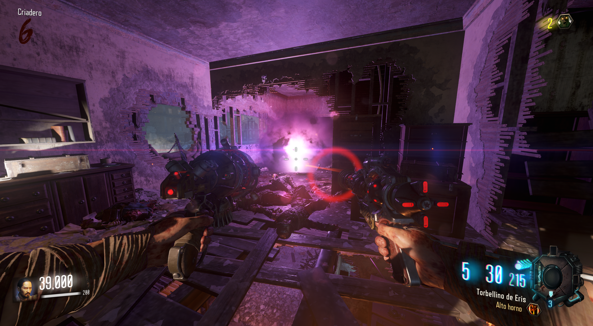

Ir a la zona del Pack-A-Punch. Ver la siguiente sección si no sabes como llegar:
Liberar cristal:
Al llegar a la zona, en la planta de arriba veremos un cristal con forma de cilindro azul. Todos los jugadores deberán de accionarlo para que comience el siguiente paso.
 Rondas:
Al liberar el cristal empezarán 4 rondas de zombies con los que tendremos que acabar.
Para las 3 primeras solo un lado de la casa abrirá sus barreras, pero en la última, todas las barreras se bajarán.(Recomiendo tener las GKZ-45 Mk3, que se consiguen en la caja)

Cuando acabemos con el último zombie, podremos acceder al cristal.Así obtenedremos el Control de Ataque Dragón.
En la sección de Mini Easter Eggs, enseñamos a mejorarlo.